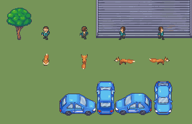

Pending coordinator visual review. Native authored pixels, fixed ground anchor, no human approval.
Loading retained sheet…
Sprite contract · Integrity checks · Visual observations · Independent bpy projections
Exact Modern Exteriors roof, tree and four-direction car crops; approved person-32.png at native scale. Ground is a flat scene-study swatch. Preview remains in place.

Rejected v1 above; revised v2 below. Same camera, world density and anchor.


Native comparison cycle ? Enlarged comparison cycle ? Native scene cycle ? Enlarged scene cycle


Compare the retained 40-degree guide beside Explorer and exact Modern Exteriors crops